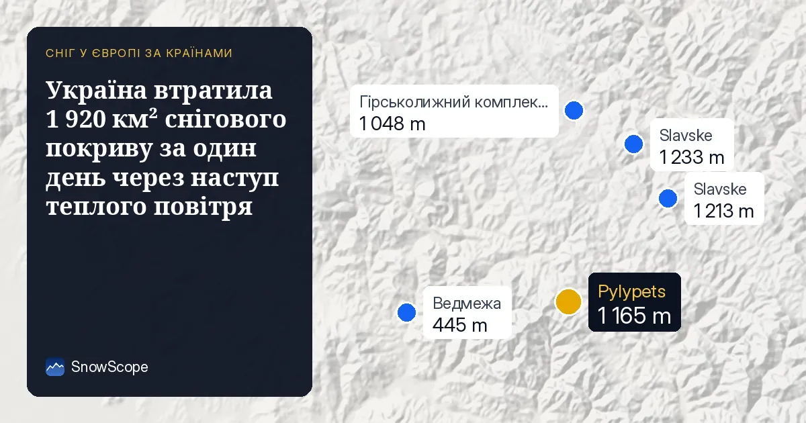

Україна втратила 1 920 км² снігового покриву за один день через наступ теплого повітря
Україна втратила майже 1 920 км² снігового покриву за один день, оскільки температури піднялися вище нуля в горах. Те, що залишилося 18 листопада, це просто 430 км² плямистого снігу, переважно вище 1 500 м у Карпатах.
Дивіться сніговий прогноз для Pylypets у застосунку SnowScopeВисота снігу, сповіщення та 3D-карта, безкоштовно.
Швидкий відлив стирає снігопади на початку сезону
Вчорашній снігопокрив 2 350 км² зменшився до 430 км² сьогодні, що становить втрату 82 відсотків за 24 години. Така поведінка характерна для раннього снігу в умовах теплого повітря: він тане швидко, оскільки снігова товща тонка, вологий, і лежить на теплій землі. З точки зору гідролога, ця вода вже залишила гори — вона стекла в струмки, а не накопичилася як гірський резерв.
Відлив був не випадковий. Там, де снігопади були найсильніші протягом останніх 72 годин — хребет Боржава (15 см), Чорногора (14 см) та Горгани (12 см) — покрив все одно майже повністю зник. Навіть на більших висотах лінія снігу відступила до 1 500 м. Нижче цієї висоти снігу більше немає або він залишився лише плямисто.
| Day | White area | Most new snow in 3 days | Deepest resort |
|---|---|---|---|
| понеділок, 16 листопада | 1 650 km² | 2 cm | Гірськолижний комплекс "Плай" |
| вівторок, 17 листопада | 2 360 km² | 6 cm | Драгобрат |
| середа, 18 листопада | 430 km² | 6 cm | Pylypets |

Глибина снігу за висотою: тонка і крихка основа
Між 1 500 м та 2 000 м наша модель показує середню глибину 3 см та 72 відсотки покриття. Це ранній сніг у його найбільш вразливому стані: неглибокий, розривчастий та чутливий до будь-якого потепління. Між 1 000 м та 1 500 м покрив існує лише на 5 відсотках території, середня глибина становить 0 см. Нижче 1 000 м снігу взагалі немає.
Тонка основа пояснює, чому вчорашні сильні снігопади не пережили відлив. Один теплий день позбавив більшість його. Для лижників це означає, що навіть на найвищих вершинах скелі та коріння залишаються небезпекою під будь-якими залишками білого покриву.

Три дні відступу після семи днів накопичення
Тиждень тому Україна мала 5 400 км² снігового покриву. До 16 листопада це впало до 1 650 км². Вчора це було 2 360 км² (тимчасова стабілізація), а сьогодні знову впало до 430 км². Закономірність показує нестабільний ранній сезон: швидке накопичення з наступним швидким втратам. Сніг ще не має глибини або зв'язності, щоб опиратися теплому повітрю.
На ці ж дати лідерство на вершинах гір переходило з рук до рук. Гірськолижний комплекс "Плай" лідирував 16 листопада з 41 см. Драгобрат перебрав вчора з 11 см. Сьогодні лідирує Пилипець, хоча лише з 5 см біля основи (1 165 м). Ні один курорт ще не будує стійку снігову товщу.
Де знайти те, що залишилося: лише найвищі хребти
Драгобрат, найвищий курорт на висоті 1 706 м, все ще має 2 см і отримав 11 см протягом останніх 72 годин. Незважаючи на сьогоднішній відлив, його верхні схили збережли деякий білий покрив. Пилипець, на висоті 1 165 м, має 5 см та отримав 5 см нових снігопадів за три дні, але розташований нижче та втратив більше покриву під час танення.
Хребет Боржава та Чорногора — два района, де недавно випало найбільше снігу — матимуть найкращі залишки плям, хоча при такій глибині та після сьогоднішнього відливу безперервні траси ще неможливі. Сніг обмежений висотою вище 1 500 м та зосереджений на північних схилах, де кут сонця найменший.
На наступному тижні прийде холодніше повітря та більше снігопадів
Нові снігопади прогнозуються на 19 листопада, найсильніший день — 20 листопада (очікується 8 см). Протягом наступних трьох днів очікується 16 см. На наступному тижні (26 листопада — 2 грудня) наша модель передбачає 22 см протягом наступного тижня та 44 см у другому тижні — суттєве сприятливе розвиток, якщо температури залишатимуться досить холодними.
Це буде випробуванням того, чи сформується справжня ранньосезонна основа. Якщо повітря залишатиметься теплим, новий сніг татиме так само швидко, як вчорашній покрив. Якщо холодна схема закріпиться, гори почнуть будувати стійку снігову товщу вперше.
Порівняння з сусідами
Лижні курорти Румунії мають 30 см у лідера (Ski Vidra) та 5 відсотків білого покриву по країні. Гори Польщі, далі на північ та вже холодніші, мають 46 см на Карпачу та також 5 відсотків покриття. Обидві країни стоять перед подібною невизначеністю: чи є цей ранній сніг передвісником снігової зими чи просто короткочасною мліями перед подальшим похолоданням.
Для лижників, які планують поїздку в Україну протягом наступних тижнів, гори варті спостереження, але не готові. Перевірте прогноз лавин та місцеві умови перед спуском поза трасою; тонкий сніг над скелями є небезпекою на крутих схилах. Використовуйте SnowScope для відстеження відбудови протягом наступних 10 днів.
Поради лижникам
- Очікуйте, що сніг залишатиметься лише вище 1 500 м. Нижні схили голі; скелі виступають з-під будь-яких білих плям.
- Новий сніг прибуває 19 листопада. Якщо температури впадуть нижче нуля і залишатимуться там, Драгобрат (1 706 м) та високі точки на хребті Боржава накопичуватимуться найшвидше.
- Перевірте офіційний лавинний прогноз перед будь-яким спуском поза трасою. Ранній сніг погано пов'язується з теплою землею.
- Спостерігайте за прогнозом на тиждень 26 листопада. Якщо холодне повітря закріпиться, гори нарешті побудують основу, яку варто їхати.
- Ранній сніг глибиною 2–5 см крихкий. Планіруйте траси на більш міцній поверхні та уникайте відкритих хребтів, де вітер може змести новий покрив.
About these numbers
Resort snow depths are the deepest snow on the resort's upper slopes from the SnowScope snow model (about 1 km, run of 18 листопада); they are estimates for an area, not a measurement at one point. Station values are measurements on the date shown. Forecasts can change. Always read the official avalanche bulletin before going off-piste.
Cite this report
For research, teaching or the press: the numbers and charts are free to reuse under CC BY 4.0 with this citation.
SnowScope (2026), Україна втратила 1 920 км² снігового покриву за один день через наступ теплого повітря, https://snowscope.app/blog/uk/2026/11/ukraine-thaw-18-november-2026.html, accessed 2026-11-18
SnowScope (Atlas Labs). (2026, November 18). Україна втратила 1 920 км² снігового покриву за один день через наступ теплого повітря. SnowScope snow reports. https://snowscope.app/blog/uk/2026/11/ukraine-thaw-18-november-2026.html
BibTeX
@misc{snowscope2026ukrainethaw18november202,
author = {{SnowScope (Atlas Labs)}},
title = {Україна втратила 1 920 км² снігового покриву за один день через наступ теплого повітря},
year = {2026},
month = nov,
howpublished = {\url{https://snowscope.app/blog/uk/2026/11/ukraine-thaw-18-november-2026.html}},
note = {Published 2026-11-18 13:29 UTC; accessed 2026-11-18}
}· CC BY 4.0 · Methods, data and tools →
Pylypets: snow and temperature by height, this winter vs last (tools) →
Follow Pylypets
Безкоштовно: повідомлення, коли йде новий сніг, і прогноз щоранку.